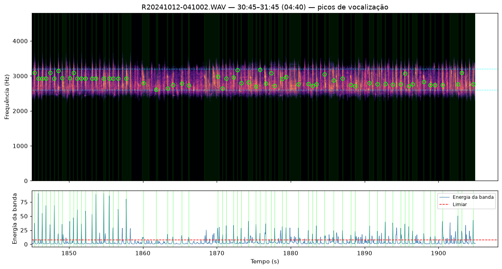
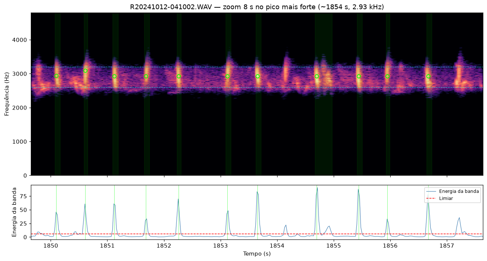
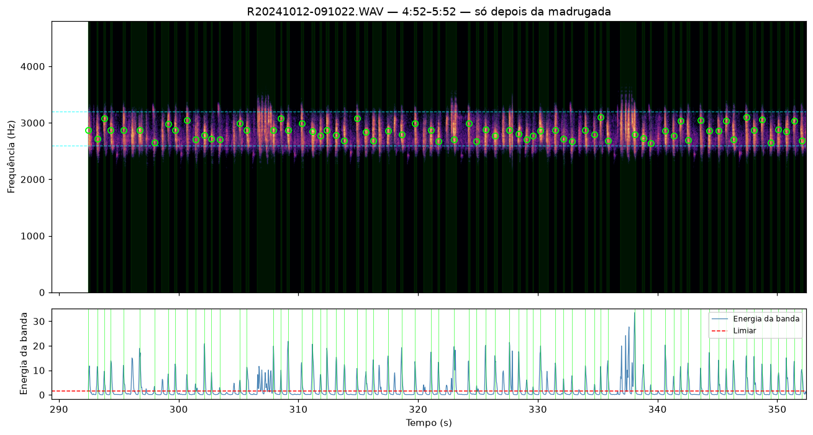

Validação visual · PR #9
Conferência humana dos picos já contados no lote — não é o método de
contagem. Círculos verdes = eventos de output/resultado.json.
Comece pela madrugada (30:45), não pelo ficheiro da manhã.


